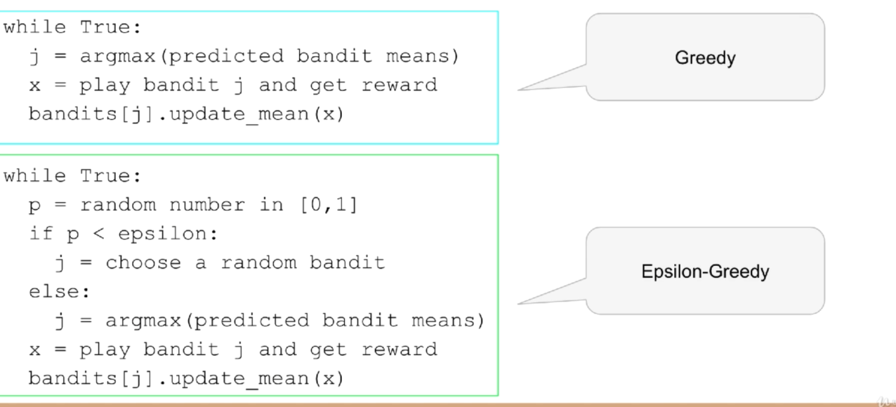
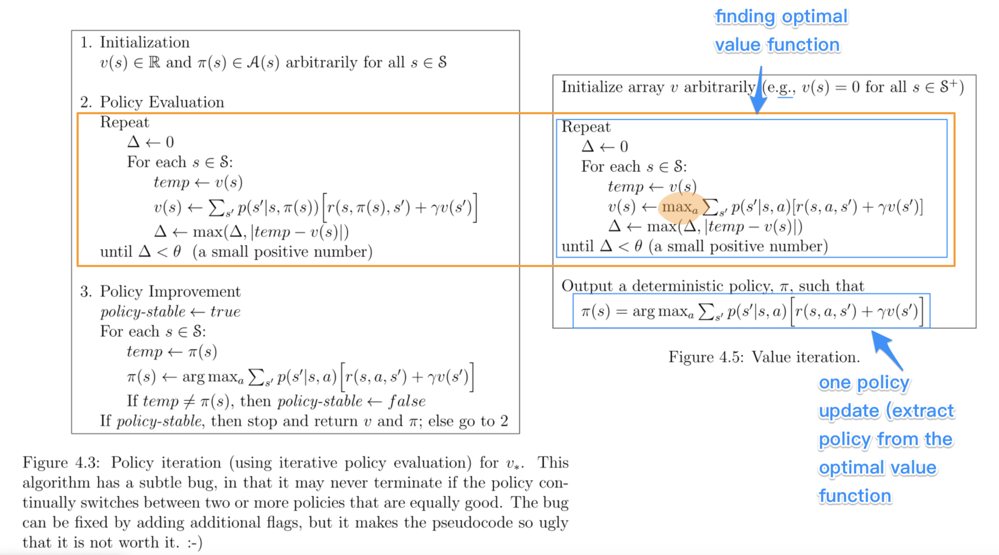

Reinforcement Learning
Here the idea is to play with two opposite forces.
Given a problem you are interesting of finding the optimal solution for it balancing two forces:
- exploration
here the goal is to collect as many data as possible and as wide as possible in order to explore the problem and all of its possible outcomes. you don't want to be greedy, i.e. you do not want to use just immediately available information as the basis of your decision/ i.e. you don't want to make locally optimal choices at each stage but you rather want to go to the global optimal solution as quickly as possible.
- exploitation
you don't want to explore states and outcomes that are not beneficial to you. you have therefore to balance the way in which you explore the states in such a way that you collect information without harming yourself too much.
the above is called the exploit-explore-dilemma.
Epsilon Greedy Theory
Here the idea is that you take the MLE action maximizing your outcome (1- ε) of the times. While with ε probability you simply do something random (i.e. you explore the space in a non-greedy way).
The pseudo-code for that would look approximately as this:

Finally, it is important that even when using this epsilon random component you might not be interested in exploring the space continuously. This especially for static problems not evolving over time.
It is namely true, that for such systems you might have explored the space sufficiently and you observed one particular state to be the most performing among the many. Then at each exploration you loose some benefit from deviating from the optimum decision.
It is therefore necessary that once you have built up trust and you deem to have explored the system sufficiently you just focus on the exploitation component and shrunk your epsilon to zero.
You can model the way to do that as needed in your business case.
In practice, some ε is often modeled as decaying in time. I.e. at the beginning you explore the space the most and then gradually you explore the more and more rarely.
Epsilon-Greedy Example
import numpy as np
import matplotlib.pyplot as plt
import math
Global Parameters
NUM_TRIALS = 10000
EPS = 0.1
BANDIT_PROBABILITIES = [0.2, 0.5, 0.75]
Define the data generation model for your bandit machine:
class Bandit:
def __init__(self, p):
# p: the win rate
self.p = p
self.p_estimate = 0
self.N = 0
self.correct = 0
def pull(self):
# draw a 1 with probability p
return np.random.random() < self.p
def update(self, x):
self.N +=1
self.correct += self.pull()
self.p_estimate = self.correct/self.N
def experiment(BANDIT_PROBABILITIES):
bandits = [Bandit(p) for p in BANDIT_PROBABILITIES]
rewards = np.zeros(NUM_TRIALS) ## initialize zero vector
num_times_explored = 0
num_times_exploited = 0
num_optimal = 0
optimal_j = np.argmax([b.p for b in bandits])
print("optimal j:", optimal_j)
for i in range(NUM_TRIALS):
# use epsilon-greedy to select the next bandit
if np.random.random() < EPS:
num_times_explored += 1
j = np.random.randint(len(bandits))
else:
num_times_exploited += 1
j = np.argmax([b.p_estimate for b in bandits])
if j == optimal_j:
num_optimal += 1
# pull the arm for the bandit with the largest sample
x = bandits[j].pull()
# update rewards log
rewards[i] = x
# update the distribution for the bandit whose arm we just pulled
bandits[j].update(x)
## log the performance of your epsilon greedy model
# print mean estimates for each bandit
for b in bandits:
print("mean estimate:", b.p_estimate)
# print total reward
print("total reward earned:", rewards.sum())
print("overall win rate:", rewards.sum() / NUM_TRIALS)
print("num_times_explored:", num_times_explored)
print("num_times_exploited:", num_times_exploited)
print("num times selected optimal bandit:", num_optimal)
# plot the results
cumulative_rewards = np.cumsum(rewards)
win_rates = cumulative_rewards / (np.arange(NUM_TRIALS) + 1)
plt.plot(win_rates)
plt.plot(np.ones(NUM_TRIALS)*np.max(BANDIT_PROBABILITIES))
plt.show()
experiment([0.2, 0.5, 0.75])

So we are close to the real world means so that we well explored the states.
Moreover our win rate is 0.7235; hence we are not that far from the CLT average when always selecting the best possible machine. In this sense the epsilon greedy algorithm performs a good job balancing the exploitation-exploration trade off.
Important in the above is also the choice of the ε parameter. Here the idea is that if you want to quickly explore the space and have fast convergence to the most profitable machine then you have to select a rather big epsilon. In contrast, if you are willing to slowly reach converge to the optimal machine but have a long-run cumulative reward (as then the deviation is small) you should choose a small ε.
Optimistic Initial Values Method
This is a second approach to deal with the exploitation-exploration trade-off. The idea here is that instead of starting with an expected value of zero for the mean reward of each machine you would set very high values for the expected reward of each machine.
By setting a high initial value, the model would try to leverage on the high expected profit for the particular machine by repeatedly "exploiting it". It is then true that as time goes by you would eventually learn the true moment of the machine and the expected gain would shrink towards the true moment.
Important is therefore to understand that for such an algorithm you do not leverage any random exploration but rather set an initial value determining the extent to which you would explore a particular machine. It is straightforward to see that:
the higher the initial value the higher the exploration on a praticular machine
Finally, notice that we do not have any consistency property for such algorithm. I.e. while the estimated mean of each machine converged to the true mean for the epsilon-greedy algorithm asymptotically, here we stop to explore a particular machine as soon as its expected mean is below the one of the other machines.
It is therefore true that as the highest true mean will set an anchor on the level of the max(expected mean) of the machines we expected that for different machines the asymptotic mean is below such anchor but did not converge as we eventually stopped exploring such machines and converged to the most rewarding machine.
Initial Optimal Value Example
Global HyperParameters
NUM_TRIALS = 10000
EPS = 0.1
BANDIT_PROBABILITIES = [0.2, 0.5, 0.75]
Data generating process
class Bandit:
def __init__(self, p):
# p: the win rate
self.p = p
self.p_estimate = 10
self.N = 1.
def pull(self):
# draw a 1 with probability p
return np.random.random() < self.p
def update(self, x):
self.N += 1.
self.p_estimate = ((self.N - 1)*self.p_estimate + x) / self.N
def experiment():
bandits = [Bandit(p) for p in BANDIT_PROBABILITIES]
rewards = np.zeros(NUM_TRIALS)
for i in range(NUM_TRIALS):
# use optimistic initial values to select the next bandit
j = np.argmax([b.p_estimate for b in bandits])
# pull the arm for the bandit with the largest sample
x = bandits[j].pull()
# update rewards log
rewards[i] = x
# update the distribution for the bandit whose arm we just pulled
bandits[j].update(x)
# print mean estimates for each bandit
for b in bandits:
print("mean estimate:", b.p_estimate)
# print total reward
print("total reward earned:", rewards.sum())
print("overall win rate:", rewards.sum() / NUM_TRIALS)
print("num times selected each bandit:", [b.N for b in bandits])
# plot the results
cumulative_rewards = np.cumsum(rewards)
win_rates = cumulative_rewards / (np.arange(NUM_TRIALS) + 1)
plt.ylim([0, 1])
plt.plot(win_rates)
plt.plot(np.ones(NUM_TRIALS)*np.max(BANDIT_PROBABILITIES))
plt.show()
experiment()

Upper Confidence Bound
This builds on the ideas of optimistic initial value.
The idea is to model probabilistically the upper bound instead of guessing from the CLT property as in the optimistically initial value algorithm.
The idea here is to choose the machine j not simply by taking the
$max {(expected reward)} $ at any given time, but rather to select the
machine based on the expected reward itself and the measurement error
for the specific machine; i.e. exploit:
\[\max{f(\bar{X_{j}}, \epsilon (X_{j}))}\]
The question is now on how to model the expected reward.
The idea of the authors of such model was the one of leveraging the Hoeffding's inequality where the bias for your sample estimation converges exponentially fast to zero.

You would then get an estimate for your error for a particular machine
at each point of time t by setting the left hand side equation to
some constant and then solving the equation for t. (in order to see
that look at the left hand side inequality in the inequality)
It is then possible to see that with p = \(\frac{1}{N^{4}}\) you would obtain:
\[ t = \sqrt{2\frac{log (N)}{n_j}} \]
You would then select your most rewarding machine as
\[ j = arg_j \max{\bar{X_j} + \sqrt{2\frac{log (N)}{n_j}}} \]
It is then clear from the formula that you would explore more:
- a machine that has never been explored
- a machine with high expected reward
And that when you sampled enough observations the denominator will tend to override the effect of the denominator and you would exploit the highest rewarding machine.
UCB Example
class Bandit:
def __init__(self, p):
# p: the win rate
self.p = p
self.p_estimate = 0.
self.N = 0. # num samples collected so far
def pull(self):
# draw a 1 with probability p
return np.random.random() < self.p
def update(self, x):
self.N += 1.
self.p_estimate = ((self.N - 1)*self.p_estimate + x) / self.N
def ucb(mean, n, nj):
return (mean + (math.log(n)/nj)**0.5)
def run_experiment():
bandits = [Bandit(p) for p in BANDIT_PROBABILITIES]
rewards = np.empty(NUM_TRIALS)
total_plays = 0
# initialization: play each bandit once
for j in range(len(bandits)):
x = bandits[j].pull()
total_plays += 1
bandits[j].update(x)
for i in range(NUM_TRIALS):
j = np.argmax([ucb(b.p_estimate, total_plays, b.N) for b in bandits])
x = bandits[j].pull()
total_plays += 1
bandits[j].update(x)
# for the plot
rewards[i] = x
cumulative_average = np.cumsum(rewards) / (np.arange(NUM_TRIALS) + 1)
# plot moving average ctr
plt.plot(cumulative_average)
plt.plot(np.ones(NUM_TRIALS)*np.max(BANDIT_PROBABILITIES))
plt.xscale('log')
plt.show()
# plot moving average ctr linear
plt.plot(cumulative_average)
plt.plot(np.ones(NUM_TRIALS)*np.max(BANDIT_PROBABILITIES))
plt.show()
for b in bandits:
print(b.p_estimate)
print("total reward earned:", rewards.sum())
print("overall win rate:", rewards.sum() / NUM_TRIALS)
print("num times selected each bandit:", [b.N for b in bandits])
return cumulative_average
run_experiment()
Bayesian Bandits - Thompson Sampling Theory
Here the idea is the one to operate in fully bayesian setting. Please refer to the following notes if you want to well appreciate the section.
The idea here is that instead balancing the exploiting-exploring trade-off via a probabilistic argument as the one above which leverages some threshold properties for the expected value bias, you might well model the prior distribution of each machine as a beta and the conditional likelihood of the data given the unknown parameter as a bernoulli.
Where θ represents the true expected reward for the modeled machine and kj represents the number of times the modeled machine was exploited and therefore the number of observations collected for it.
Given that we are dealing here with the beta exponential family it is easy to show that in such a case the resulting posterior resulting from the likelihood distribution of the data and the prior is a beta distribution itself with the following moments:
and choosing a uninformative prior such as the uniform distribution, which results in a Beta(1,1) distribution you would get that:
Hence you see that the distribution adapts to fit your data.
The idea of the Thompson Sampling is now the following:
- sample from the prior distribution at the first iteration
- choose the machine with the highest sample as from 1. (3.) generate a new posterior for the machine.
- sample from the three machine distribution (prior if no data available) posterior otherwise. go back to 2.
Thompson Sampling - Bandit Example
import matplotlib.pyplot as plt
import numpy as np
from scipy.stats import beta
# np.random.seed(2)
NUM_TRIALS = 2000
BANDIT_PROBABILITIES = [0.2, 0.5, 0.75]
class Bandit:
def __init__(self, p):
self.p = p
self.a = 1
self.b = 1
self.N = 0 # for information only
def pull(self):
return np.random.random() < self.p
def sample(self):
return np.random.beta(self.a, self.b)
def update(self, x):
self.a += x
self.b += 1 - x
self.N += 1
def plot(bandits, trial, idx):
x = np.linspace(0, 1, 200)
plt.subplot(5,5,idx)
for b in bandits:
y = beta.pdf(x, b.a, b.b)
plt.plot(x, y, label=f"real p: {b.p:.4f}, win rate = {b.a - 1}/{b.N}")
plt.title(f"Bandit distributions after {trial} trials")
plt.legend()
def experiment():
idx = 0
bandits = [Bandit(p) for p in BANDIT_PROBABILITIES]
sample_points = [5,10,20,50,100,200,500,1000,1500,1999]
rewards = np.zeros(NUM_TRIALS)
f, axes = plt.subplots(figsize = (30, 30))
for i in range(NUM_TRIALS):
# Thompson sampling
j = np.argmax([b.sample() for b in bandits])
# plot the posteriors
if i in sample_points:
idx += 1
plot(bandits, i, idx)
# pull the arm for the bandit with the largest sample
x = bandits[j].pull()
# update rewards
rewards[i] = x
# update the distribution for the bandit whose arm we just pulled
bandits[j].update(x)
plt.show()
# print total reward
print("total reward earned:", rewards.sum())
print("overall win rate:", rewards.sum() / NUM_TRIALS)
print("num times selected each bandit:", [b.N for b in bandits])
experiment()

total reward earned: 1533.0 overall win rate: 0.7665 num times selected each bandit: [13, 44, 1943]
From the above you see that as you sample more from the most rewarding function then your beta parameters adapt. At the beginning as you have just a few samples and you have no successful draws for machine 1,2 the distribution of them has a distribution with mean < 0.5 and is strongly skewed in favour of expected reward = 0 where the most of the samples would generate. I.e. we already tend to exploit the machine with the highest reward: machine 3.
As you get more samples the distributions adapts according to the data. It is clear that already after 200 samples the distribution for the third machine is quite concentrated around its mean and therefore the probability of sampling a higher number for the third machine and therefore exploiting the third machine is already consistent. In fact between obs = 200 and obs = 500 we "exploit" the first machine just 2 more times and 7 times the second machine, therefore correctly exploiting the 3 machine 293/300 times.
Notice finally that you can expand the above to have a different reward likelihood as the bernoulli. Depending on your case you might well want to model the likelihood in a different way - it is however always recommended that you set up your model to come out with conjugate priors distributions -. The thompson sampling approach is therefore generalizable and it is just a matter of properly specifying the proper distributions of your likelihood and prior and come up with the posterior (as said ideally a conjugate distribution).
The General Reinforcement Learning Setting
The idea here is to expand on the simple bandit problem seen so far, where you just confronted with the case of action (choice of machine) -> reward.
In a general RL framework the situation is more complex. The idea is that you would have a setting:
The environment, i.e. the states, is generally modeled through a grid, that would save the different states and the rewards in each cell. On such a state grid you would base your action which would determine the obtained reward and finally influence the new gridworld matrix. The function mapping a state change to an action is termed a policy. Notice that such policy might well be deterministic or probabilistic.
Another important term in the RL world is the one of an episode. This is an iteration of the game that is being played. It is similar to an epoch in Deep Learning so to say. Notice that a game end not after each iteration but rather once the terminal state is reached - for instance in a finance application if you lost X% of value of your wallet; or in barrier options if the barrier was triggered -.
Notice, that in contrast to the examples for episodic tasks above mentioned with clearly defined terminating states, some games might be non-episodic such that no terminal state exists.
Summing all of the components up your have the following model
Then with the notation
s' = st+1, r = rt+1, s = st, a = at
where the lower notation denotes that the above are actual realizations of the random variables: St+1, Rt+1, St, At.
You can model the probability of the expected reward and state in t+1 as:
\[ S_{t+1}, R_{t+1} \mathtt{\sim} p(s', r | s,a) \]
this will be in fact the job in RL and your role is to define such probability for the transition to statet+1. Notice that this is the more general formulation where the reward is stochastic given the state and the action taken. This is useful when you deal with systems where you do not have perfect information.
You might have many systems where this is not the case so that the general framework would look as:
\[ S_{t+1} \mathtt{\sim} p(s'| s,a) \]
and the reward r would be simply determined by {s,a} and therefore does not enter the equation above.
Notice moreover that the state st does not have to be defined by a single observation. You might well have multiple observation to define a state (think for instance a set of images in a video such that it is possible from it to derive motion for the single components).
Notice finally, that the above is analogous to a markov model with the additional variables (a,r). This is in fact what contrast a Markov Decision Process from a Markov Process. In an MDP you condition on the action taken and not simply on the state.
Notice that for small systems you might represent Markov Decision Processes via State-Action-Diagrams.
Objective
Given the general setting above it is now clear that in reinforcement learning the goal would be for the agent to decide on the action to take that will lead to the possibility of maximizing the sum of future rewards for the episode.
\[ G(t) = \sum_{\tau = 0}^{T} R(t + \tau + 1) \]
Moreover, it is usual in reinforcement learning to discount rewards into the feature by a discount factor γ. This is a very much finance alike approach and the intuition there is that being the model probabilistic estimates for rewards into the future are more uncertain and you should therefore weight them less.
\[ G(t) = \sum_{\tau = 0}^{T} \gamma^{\tau} R(t + \tau + 1) \]
The question is then on how to decide on the discount factor. This is usually set as a hyperparameter and tuned by simulation when domain knowledge is missing.
Notice, now that the future rewards might not be possible to be determined ex-ante at period t. This is why in general we aim at maximizing:
\[ V_\pi(s) = E_\pi [G(t) | S_{t} = s] \]
This is the final objective function we aim to maximize in reinforcement learning.
Bellmann Equation
Notice now that as G(t) is recursive you might well write
\[ G(t + 1) = \sum_{\tau = 0}^{T} \gamma^{\tau} R((t+1) + \tau + 1) \]
such that
\[ G(t) = R(t+1) + \gamma G(t+1) \]
and
\[ V_\pi(s) = E_\pi [R(t+1) + \gamma G(t+1) | S_{t} = s] \]
Given the law of iterated expectation (tower rule) it is then possible to write the above as
\[ V_\pi(s) = E_\pi [R(t+1)| S_{t} = s] + \gamma E_\pi[G(t+1) | S_{t} = s] \]
\[ V_\pi(s) = E_\pi [R(t+1)| S_{t} = s] + \gamma E_\pi[E_\pi[G(t+1) | S_{t+1} = s'] | S_{t} = s]] \]
\[ V_\pi(s) = E_\pi [R(t+1) + \gamma V_\pi(s+1) | S_{t} = s]] \]
Hence the objective function has as well recursive structure.
This practically means that for solving the objective function in a particular state you do not have to solve recursively to get G(t) and therefore compute each individual r(t+k), but you rather need only the objective function in the next period.
and with the other two analogous equations for the other states you are back to linear algebra such that you can solve a system of equations and get the objective function at each state so that you can compute the value function for a specific state.
Finally, notice in the above you are working with the expected Eπ, i.e. you are taking the average among all of the actions for a particular state. This might be useful for systems where the agent does not control the action decision.
However, in case of taking a specific action the system has to decide on your value function would rather looks as
This Q-Function; i.e. action-value objective function would be the one you minimize.
So that it finally holds:
\[ V_\pi(s) = \sum_a \pi{(a|s)} Q_\pi(s,a) \]
Which Objective Value function is better
Notice that in machine learning you have a single ending state so that it is easy to define if one particular parameter vector is better than another one by simple determine the loss function of the two and minimizing it.
In reinforcement learning it is not that trivial to define when a policy (i.e. \(\phi: S \mapsto A\)) is better than another one as you do not simply have to have a higher value for the state you landed in but rather
\[ \pi_1 \geq \pi_2 iff V_{\pi_1} \geq V{\pi_2} \forall s \in S \]
This given the stochastic nature of the transition to a state given an action and the previous state.
It follows now that you should base your decision for the policy π and for your action based on:
Recall now that as
\[ V_\pi(s) = E_\pi [R(t+1) + \gamma V_\pi(s+1) | S_{t} = s]] \]
and
\[ V_\pi^{*} (s) = max_\pi E_\pi [R(t+1) + \gamma V_\pi(s+1) | S_{t} = s]] \]
with π \(\Longleftrightarrow\) φ: S \(\mapsto\) A,
\[ V_\pi^{*} (s) = max_a [R(t+1) + \gamma V_\pi(s+1) | S_{t} = s]] \]
finally you have:
Given the above it now follows that for deciding on which policy to take you can leverage one of the two:

Albeit in practice it would probably make sense to use the left option to compute the optimal policy, in practice in RL you will often work with the right hand side equation as it is less cumbersome and computationally faster.
This in fact does not require you to sum over two random variables (s' and r) for many different action possibilities but rather simply to take the maximum value in your Q-table.
This leaves us with the following outline that will be the basic approach for each RL algorithm we are going to explore next.
I.e. do:
- find V(s) for a given policy (evaluation / prediction problem)
- find the best policy by finding Q* (control problem)
On the Evaluation / Prediction Problem
The previous sections outlined the entire theory behind reinforcement learning. We defined an objective function we aim to maximize - i.e the bellman value function equation -.
As we saw in the previous section you might solve for each value function by solving a linear system of equations. However, in the case the state numbers would be big - think for instance to the well known alpha go case - this approach would be difficult to treat.
The next section goes over four different methods to circumvent the difficulty. These are
- dynamic Programming
- Monte Carlo Simulation
- Temporal Difference Learning
- Approximation Methods
The general outline foe all of the different methods will be.
- Solve the Prediction Problem; i.e. find the value function given a policy π
- Solve the Control Problem; i.e. find the optimal policy.
Important is to notice that the methods will grow in complexity and will build up on each other.
- dynamic programming: it is good in that it solves the problems by iteration and does not rely on solving the entire linear system in standard ways. It is however not that practical as it doesn't learn from experience and assumes that we know all of the relevant distributions p(s' | s,a).
monte carlo methods: are good in the way that it does not requires to specify p(s'| s,a) as it rather relies on the mean gains obtained for each episode. I.e. it learns from experience rather than learning from a probability that has to be fully specified.
It does require lots of simulation and has the disadvantage of not being fully online. I.e. you don't learn in an iterative way where the previous result might be used immediately on the next computation but you rather require to run an entire episode to get a single new data point.
- temporal difference learning: this combines the idea of the two approaches above; i.e. it will use bootstrapping such that it will be possible to update estimates based on other estimates as we will shortly see. Moreover it does learn from experience.
- approximation methods: albeit all of the methods above improve the situation in comparison of solving a huge linear system of equations which involves inverting a huge matrix, all of them might still be infeasible for large state spaces. In this sense approximation methods try to compress the value function by expressing it by some feature variables and therefore reduce the dimension of the problem making it tractable.
Solving the Prediction and Control Problem
Dynamic Programming
A first solution for solving the prediction problem and the control problem is the one of leveraging iterative optimization methods, aka dynamic programming.
- Prediction Problem - Iterative Policy Evaluation
One iterative method to solve the prediction problem; i.e. solve for the value function given a policy would look as follows:
The idea is that at each iteration you get closer to the true value V(s) as each V(s') increases and therefore you gradually approach your desired solution.
Important is to notice that in the equation above if you would strictly look at the Bellmann Equation:
You would have to adapt the value function in a particular state s from the value function V(s') in the previous iteration. It was however showed that replacing in "place" i.e. already using computed V(s')k+1 in the right hand side of the equation above leads to faster convergence. It is therefore recommended that you do so in practice.
- Control Problem - Policy iteration
The idea of this section is to solve the control problem; i.e. to find the best performing policy π*.
This method works as follows.
First recall that:
Then it is clear that given the recursive property of return
\[ Q(s,a) = \sum_{s'}\sum_r p(s',r |s,a) {r + \gamma V(s')} \]
moreover, noticing that using the policy used in the evaluation step (say πs) you would have
\[ V_\pi(s) = Q(s,\pi_{s}) = \sum_{s'}\sum_r p(s',r |s,a) {r + \gamma V(s')} \]
So that given that you have computed V(s') in the policy evaluation step you could now try an iterative method where you would alter just a single state i.e. alter a single a for the policy πs and you would then look whether:
\[ Q_\pi(s,a) > Q(s,\pi_{s}) \]
and if it does set the new policy with the changed action as the new policy π's. You would then repeat the above exercise for all of the policies in a particular state and get
\[ \pi'(s) = arg_a max Q_\pi (s,a) \]
Combining this with the policy evaluation iteration method above you would have the following pseudo code for solving the bellman equation
V(s) = 0 \forall s \in S, where S = all_states policy(s) = randomly initialized while True: do_policy_evaluation_ as_in_pseudo_code_above_given_a_policy policy_changed = False for s \in S: old_a = policy(s) policy(s) = argmax[a] {sum[s',r] {p(s',r | s,a)[r + \gamma * V(s')]}} if policy(s) != old_a: policy_changed = True if not policy_changed: breakA further improvement on the above is the idea that the policy evaluation step stops when Vk+1(s) converges. As in reinforcement learning we are however interested in the solution to the control problem and we use the prediction problem just a mean to get there. Recall that we are interested in the policy such that we can map states to actions and make our Agent responsive to the Environment maximizing the expected value of discounted returns.
The question in this section is whether it is necessary to have convergence in the Value function to have convergence to the optimal policy - the object of interest -.
It was proven empirically that this is the case so that you might further improve the above by just running a few iterations and then stop. It is not clear after how many steps convergence occurs so just break for big computationally intense applications.
Notice that while it is possible to solve the bellman equation in a fully iterative way using the above technique it is inefficient as it uses two nested loops. The following shows on how to further compress the iterative procedure to avoid such double looping and save in the necessary computational power.
- Value Iteration
This is as said a more direct way to solve the control problem in comparison to the policy iteration.
The idea is that instead of searching the best policy at each step - i.e. for each policy evaluation run - ; you simply take the maximum policy evaluation among all of the actions at each run and you extract the optimal policy one-single-time at the end once you have found the maximum value function.

This is then analogous to policy iteration method in that by finding the maxa you are actually finding the argmaxa for the policy at each step as in the policy iteration method above.